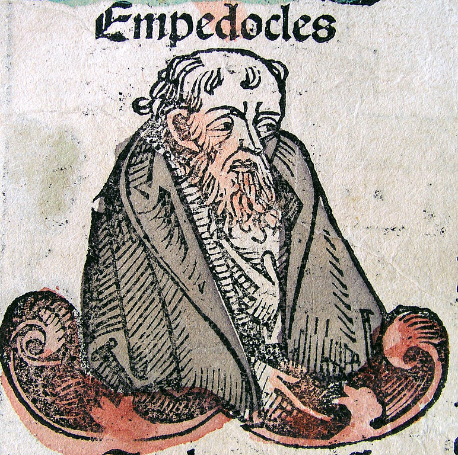

How came the bodies of animals to be contrived with so much art, and for what ends were their several parts?
Isaac Newton, Opera Omnia, IV. 237.
I’ve always been curious how far back in history the tool-like or machine-like properties of living things were recognized, and how these were explained.
It turns out that Darwin was scooped over 2000 years ago.
Plato clearly recognized that animals have functional traits that are usually, but not always, explained by the benefit they provide to the animal itself. Plato’s Protagoras, written c. 390 BC, relates a version of the Prometheus creation myth in which various properties of animals are explained by their role in animal survival, e.g., an animal’s strength, speed, size, or weaponry is there to protect the animal. Thick hair or hard skins are there to protect against the seasons sent by Zeus. The animals are appointed different foods: some grass, others fruits. Those who eat other animals are few in number, whereas prey are bestowed with fertility so as to preserve the species.
Plato, however, did not limit beneficial “design” to living things, nor did animal traits always benefit the animal itself. In the Timaeus, written many years later, Plato proposed that a divine and supremely good Demiurge (craftsman) created the universe in precisely such a way that the universe as a whole, as well as its various parts, produce a vast number of good effects. He created the sun, moon, and stars to mark time, for instance, which itself came into being as an image of eternity (Zeyl and Sattler 2017). He created eyes for sight, “to the end that we might behold the courses of intelligence in the heaven, and apply them to the courses of our own intelligence which are akin to them,” that we “might imitate the absolutely unerring courses of God and regulate our own vagaries” (emphasis added).
Ancient atomists such as Democritus, a contemporary of Plato, eschewed such teleology. Instead, according to them, the universe is explained by the movements and interactions of a small number of indivisible particles in a void. The atomists offered ingenious arguments to explain many natural phenomena in terms of interactions of these indivisible particles – atoms – which have only a few intrinsic properties like size and shape, and strike against one another, rebounding and interlocking in an infinite void. Critically, there is no Demiurge. Causation is due only to blind necessity or chance (Berryman 2016).
Aristotle, perhaps writing around 330 BC, grappled with both the atomists and with Plato. To explain some phenomena, even those that benefited humanity, he invoked atomist arguments. Rain, for example, occurs of necessity, and itself has necessary and chance effects (Physics II 8):
[W]hy should not nature work, not for the sake of something, nor because it is better so, but just as the sky rains, not in order to make the corn grow, but of necessity? What is drawn up must cool, and what has been cooled must become water and descend, the result of this being that the corn grows. Similarly if a man’s crop is spoiled on the threshing-floor, the rain did not fall for the sake of this – in order that the crop might be spoiled – but that result just followed.
Parts of animals, though, according to Aristotle, cannot be explained (only) by blind necessity or chance. Teeth, for instance:
…are admirably constructed for their general office, the front ones being sharp, so as to cut the food into bits, and the hinder ones broad and flat, so as to grind it to a pulp…. (Parts of Animals III 1).
Because teeth grow this way in (almost) all humans, Aristotle goes on to argue, this pattern cannot be due to chance, contrary to the atomists. Instead, using a series of abductive arguments, Aristotle concludes that the parts of animals can only be explained by their purpose, a final cause (Ariew 2002). But no inference is made to a Platonic demiurge. Aristotle’s teleology, unlike Plato’s, is local, not global; it is immanent in the organism, not external to it (Ariew 2002; Schiefsky 2007).
How, though, did the atomists, who aimed to explain everything by blind necessity or chance, and certainly did not invoke final causes, explain the parts of animals? In a brief but remarkable passage, Aristotle refers to an argument by Empedocles, who lived in the 5th century BC:
Wherever then all the parts [of animals] came about just what they would have been if they had come be for an end, such things survived, being organized spontaneously [i.e., by chance] in a fitting way; whereas those which grew otherwise perished and continue to perish, as Empedocles says his ‘man-faced ox-progeny’ did. (Physics II 8)
When I read this, my heart skipped a beat. That is natural selection.
Could I have just made the remarkable discovery that Darwin was scooped by Empedocles in the 5th century BC? Uh, no. A quick google revealed that Darwin himself cited this passage in the preface to 4th edition of Origin as a historical forerunner to his theory (for details, see Gotthelf 2012). Even the Wikipedia article on natural selection mentions it. Dang!
It was Empedocles who claimed that everything is composed of exactly four elements – fire, air, earth, and water – which are moved by two opposing forces, Love and Strife. The four elements combine under the force of Love, and separate under the force of Strife (Perry 2016). Empedocles set forth his philosophy in poetry, only fragments of which survive. The lines describing the origins of animal parts are pretty trippy (Perry 2016):
Here sprang up many faces without necks, arms wandered without shoulders, unattached, and eyes strayed alone, in need of foreheads (B 57).
Under the force of Love, these parts randomly combine:
Many creatures were born with faces and breasts on both sides, man-faced ox-progeny, while others again sprang forth as ox-headed offspring of man, creatures compounded partly of male, partly of the nature of female, and fitted with shadowy parts. (B 61)
It is these random creatures that differentially survive if, by chance, they were organized in a “fitting way.”
This left me wondering: in a materialist account of the universe, which would only arise again in the West in full force following Galileo and Newton, is the idea of natural selection, in some sense, inevitable?
References
Ariew, A. (2002). Platonic and Aristotelian roots of teleological arguments. Functions: New readings in the philosophy of psychology and biology, 7-32.
Berryman, Sylvia, “Ancient Atomism”, The Stanford Encyclopedia of Philosophy (Winter 2016 Edition), Edward N. Zalta (ed.). https://plato.stanford.edu/archives/win2016/entries/atomism-ancient/
Gotthelf, A. (2012). Teleology, First Principles, and Scientific Method in Aristotle’s Biology. Oxford University Press. https://doi.org/10.1093/acprof:oso/9780199287956.001.0001
Parry, Richard, “Empedocles”, The Stanford Encyclopedia of Philosophy (Fall 2016 Edition), Edward N. Zalta (ed.), URL = https://plato.stanford.edu/archives/fall2016/entries/empedocles/.
Schiefsky, M. (2007). Galen’s teleology and functional explanation. Oxford Studies in Ancient Philosophy, 33, 369-400.
Zeyl, Donald and Sattler, Barbara, “Plato’s Timaeus”, The Stanford Encyclopedia of Philosophy (Winter 2017 Edition), Edward N. Zalta (ed.). https://plato.stanford.edu/archives/win2017/entries/plato-timaeus/.